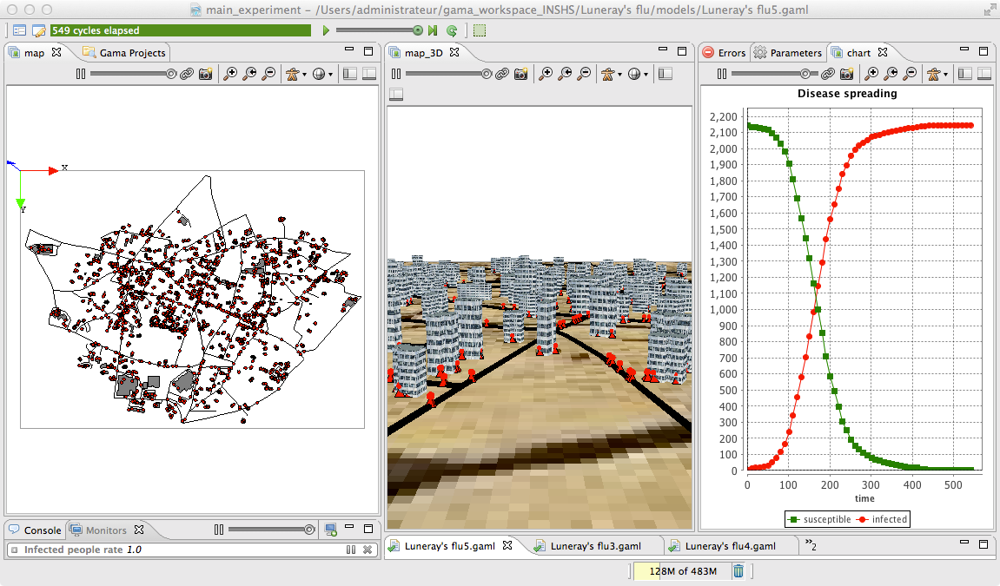

5. Definition of 3D displays
This fifth step illustrates how to define 3D displays

Formulation
- Define a new 3D aspect for roads.
- Define a new 3D aspect for buildings
- Define a new 3D aspect for people
- Define a new 3D display
Model Definition
species
First, we add a new variable called display_shape of type geometry for road agent that is a tube of 2m radius built from its geometry. Note that it is possible to get the list of points composing a geometry by using the points variable of the geometry. We define then an aspect called geom3D that draws the previous geometry in black.

species road {
geometry display_shape <- line(shape.points, 2.0);
//....
aspect geom3D {
draw display_shape color: #black;
}
}
Concerning the building species, we add a new variable called height of type float that is initialized by a random value between 20 and 40 meters. We define then an aspect called geom3D that draws the shape of the building with a depth of height and with using a texture (“texture.jpg” that is located inside the includes folder).

species building {
float height <- 20#m + rnd(20) #m;
//....
aspect geom3D {
draw shape depth: height texture:["../includes/texture.jpg"];
}
}
At last, we define a new aspect called geom3D for the people species that draws first a pyramid of 5 meters size, then a sphere of radius 2 meters at a height of 5m (z = 5). Note that it is possible to access the coordinates of a point by using the x, y and z variables. In GAMA, a point can be defined by using the format {x_value,y_value,z_value}.

species people skills:[moving]{
//....
aspect geom3D{
draw pyramid(5) color: is_infected ? #red : #green;
draw sphere(2) at: {location.x,location.y,5} color: is_infected ? #red : #green;
}
}
output
We define a new display called map_3D of type opengl with an ambient_light of 120 that displays first a image (“soil.jpg”), then the road with the geom3D aspect, then the building with the geom3D aspect, and finally the people with the geom3D aspect. All layers except the people’s one will not be refreshed (refresh set to false).
experiment main_experiment type: gui {
output {
// monitor and other displays
display map_3D type: opengl ambient_light: 120 {
image "../includes/soil.jpg" refresh: false;
species road aspect:geom3D refresh: false;
species building aspect:geom3D refresh: false;
species people aspect:geom3D;
}
}
}
Complete Model
model SI_city5
global{
int nb_people <- 2147;
int nb_infected_init <- 5;
float step <- 1 #mn;
file roads_shapefile <- file("../includes/roads.shp");
file buildings_shapefile <- file("../includes/buildings.shp");
geometry shape <- envelope(roads_shapefile);
int nb_people_infected <- nb_infected_init update: people count (each.is_infected);
int nb_people_not_infected <- nb_people - nb_infected_init update: nb_people - nb_people_infected;
float infected_rate update: nb_people_infected/nb_people;
graph road_network;
init{
create road from: roads_shapefile;
road_network <- as_edge_graph(road);
create building from: buildings_shapefile;
create people number:nb_people {
my_house <- one_of(building);
location <- any_location_in(my_house);
}
ask nb_infected_init among people {
is_infected <- true;
}
}
reflex end_simulation when: infected_rate = 1.0 {
do pause;
}
}
species people skills:[moving]{
float speed <- (2 + rnd(3)) #km/#h;
bool is_infected <- false;
building my_house;
point target;
bool in_my_house <- true;
reflex stay when: target = nil {
if flip(in_my_house ? 0.01 : 0.1) {
building bd_target <- in_my_house ? one_of(building) : my_house;
target <- any_location_in (bd_target);
in_my_house <- not in_my_house;
}
}
reflex move when: target != nil{
do goto target:target on: road_network;
if (location = target) {
target <- nil;
}
}
reflex infect when: is_infected{
ask people at_distance 10 #m {
if flip(0.05) {
is_infected <- true;
}
}
}
aspect circle{
draw circle(10) color:is_infected ? #red : #green;
}
aspect geom3D{
draw pyramid(5) color: is_infected ? #red : #green;
draw sphere(2) at: {location.x,location.y,5} color: is_infected ? #red : #green;
}
}
species road {
geometry display_shape <- line(shape.points, 2.0);
aspect geom {
draw shape color: #black;
}
aspect geom3D {
draw display_shape color: #black;
}
}
species building {
float height <- 20#m + rnd(20) #m;
aspect geom {
draw shape color: #gray;
}
aspect geom3D {
draw shape depth: height texture:["../includes/texture.jpg"];
}
}
experiment main_experiment type:gui{
parameter "Nb people infected at init" var: nb_infected_init min: 1 max: 2147;
output {
monitor "Infected people rate" value: infected_rate;
display map type: opengl{
species road aspect:geom;
species building aspect:geom;
species people aspect:circle;
}
display map_3D type: opengl ambient_light: 120 {
image "../includes/soil.jpg" refresh: false;
species road aspect:geom3D refresh: false;
species building aspect:geom3D refresh: false;
species people aspect:geom3D;
}
display chart refresh:every(10) {
chart "Disease spreading" type: series {
data "susceptible" value: nb_people_not_infected color: #green;
data "infected" value: nb_people_infected color: #red;
}
}
}
}